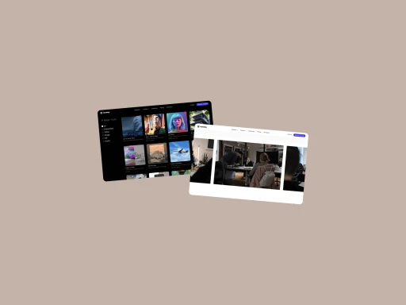
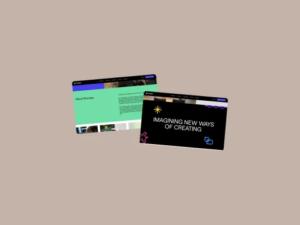
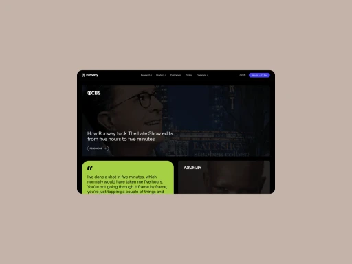
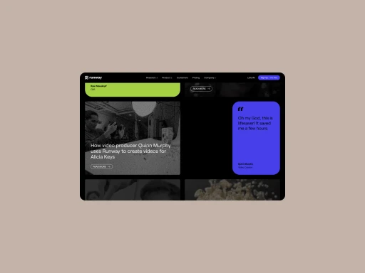
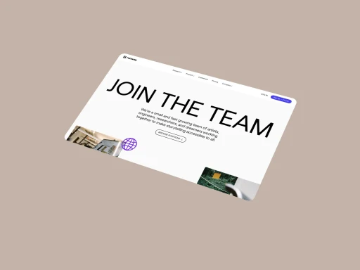
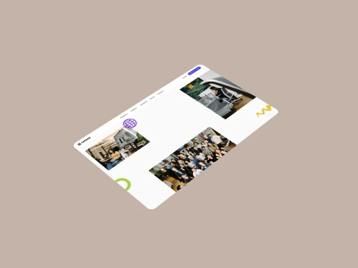

Edbost
High-end VFX and editing tools required steep learning curves and costly subscriptions, putting them out of reach for small studios and solo creators. Edbost identified the need for democratized AI-powered creative tools that simplified advanced workflows.

Explore the full story –
Challenge
Independent filmmakers and digital artists lacked access to affordable, user-friendly AI tools, forcing them to rely on expensive, complex software or outsource effects work—limiting creative control and scalability.
Objective
The mission was to build an accessible, cloud-based platform offering AI-driven video editing, green screen removal, and text-to-video generation. By integrating machine learning into an intuitive interface, Edbost aimed to empower creators without technical expertise.
Results
Edbost became a game-changer for indie artists, enabling professional-grade results at a fraction of the cost. Its tools have been used in award-winning projects, proving that AI could level the playing field in creative industries.





